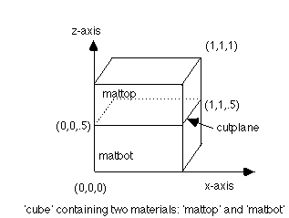

5. Assign material
types to the regions
Assign materials to regions using
the
mregion command. This command has similar syntax to the region
command except that the interface should not be assigned to any
material region. To assign two materials, mattop and matbot,
to the regions top and bottom:
mregion/mattop/ le cube
and gt cutplane /
mregion/matbot/ le
cube and lt cutplane /
